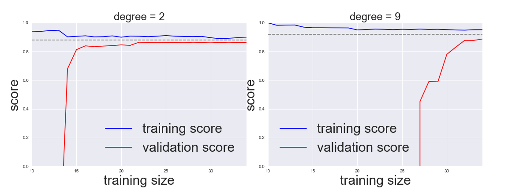

Hyperparameters and Model Validation¶
This notebook contains an excerpt from the Python Data Science Handbook by Jake VanderPlas; the content is available on GitHub.
The text is released under the CC-BY-NC-ND license, and code is released under the MIT license. If you find this content useful, please consider supporting the work by buying the book!
In the previous section, we saw the basic recipe for applying a supervised machine learning model:
Choose a class of model
Choose model hyperparameters
Fit the model to the training data
Use the model to predict labels for new data
The choice of model and choice of hyperparameters are perhaps the most important part.
we need a way to validate that our model and our hyperparameters are a good fit to the data.
There are some pitfalls that you must avoid to do this effectively.
Thinking about Model Validation¶
Model validation is very simple:
Applying the trained model to test data,
Comparing the prediction to the known values.
The use of
holdout setsThe use of
cross-validation
Model validation the wrong way¶
Let’s demonstrate the naive approach to validation using the Iris data
from sklearn.datasets import load_iris
iris = load_iris()
X = iris.data
y = iris.target
Next we choose a model and hyperparameters.
Here we’ll use a k-neighbors classifier with n_neighbors=1.
This is a very simple and intuitive model
“the label of an unknown point is the same as the label of its closest training point”
from sklearn.neighbors import KNeighborsClassifier
model = KNeighborsClassifier(n_neighbors=1)
Then
we train the model, and
use it to predict labels for data we already know:
model.fit(X, y)
y_model = model.predict(X)
Finally, we compute the fraction of correctly labeled points:
from sklearn.metrics import accuracy_score
accuracy_score(y, y_model)
1.0
We see an accuracy score of 1.0, which indicates that 100% of points were correctly labeled by our model!
In fact, this approach contains a fundamental flaw:
it trains and evaluates the model on the same data.
Furthermore, the nearest neighbor model is an instance-based estimator that simply stores the training data,
it predicts labels by comparing new data to these stored points:
except in contrived cases, it will get 100% accuracy every time!
Model validation the right way: Holdout sets¶
We hold back some subset of the data from the training of the model, and then
use this holdout set to check the model performance.
This splitting can be done using the train_test_split utility in Scikit-Learn:
from sklearn.model_selection import train_test_split
# split the data with 50% in each set
X1, X2, y1, y2 = train_test_split(X, y, random_state=0,
train_size=0.5, test_size = 0.5)
# fit the model on one set of data
model.fit(X1, y1)
# evaluate the model on the second set of data
y2_model = model.predict(X2)
accuracy_score(y2, y2_model)
0.9066666666666666
We see here a more reasonable result:
the nearest-neighbor classifier is about 90% accurate on this hold-out set.
The hold-out set is similar to unknown data, because the model has not “seen” it before.
Model validation via cross-validation¶
One disadvantage of using a holdout set for model validation
we have lost a portion of our data to the model training.
In the above case, half the dataset does not contribute to the training of the model!
This is not optimal, and can cause problems
especially if the initial set of training data is small.
cross-validation does a sequence of fits where each subset of the data is used both as a training set and as a validation set.
Model validation via cross-validation¶
Visually, it might look something like this:
# Here we do two validation trials,
# alternately using each half of the data as a holdout set.
# Using the split data from before, we could implement it like this:
y2_model = model.fit(X1, y1).predict(X2)
y1_model = model.fit(X2, y2).predict(X1)
accuracy_score(y1, y1_model), accuracy_score(y2, y2_model)
(0.96, 0.9066666666666666)
What comes out are two accuracy scores, which
we could calculate the mean value to get a better measure of the global model performance.
This particular form of cross-validation is a two-fold cross-validation
that is, one in which we have split the data into two sets and used each in turn as a validation set.
We could expand on this idea to use even more trials, and more folds in the data—for example, here is a visual depiction of five-fold cross-validation:
Here we split the data into five groups, and use each of them in turn to evaluate the model fit on the other 4/5 of the data.
# We can use Scikit-Learn's ``cross_val_score`` convenience routine to do it succinctly:
from sklearn.model_selection import cross_val_score
cross_val_score(model, X, y, cv=5)
array([0.96666667, 0.96666667, 0.93333333, 0.93333333, 1. ])
Repeating the validation across different subsets of the data gives us an even better idea of the performance of the algorithm.
Scikit-Learn implements a number of useful cross-validation schemes that are useful in particular situations;
these are implemented via iterators in the
cross_validationmodule.For example, we might wish to go to the extreme case in which our number of folds is equal to the number of data points:
we train on all points but one in each trial.
This type of cross-validation is known as leave-one-out cross validation
from sklearn.model_selection import LeaveOneOut
scores = cross_val_score(model, X, y, cv=LeaveOneOut())
scores
array([1., 1., 1., 1., 1., 1., 1., 1., 1., 1., 1., 1., 1., 1., 1., 1., 1.,
1., 1., 1., 1., 1., 1., 1., 1., 1., 1., 1., 1., 1., 1., 1., 1., 1.,
1., 1., 1., 1., 1., 1., 1., 1., 1., 1., 1., 1., 1., 1., 1., 1., 1.,
1., 1., 1., 1., 1., 1., 1., 1., 1., 1., 1., 1., 1., 1., 1., 1., 1.,
1., 1., 0., 1., 0., 1., 1., 1., 1., 1., 1., 1., 1., 1., 1., 0., 1.,
1., 1., 1., 1., 1., 1., 1., 1., 1., 1., 1., 1., 1., 1., 1., 1., 1.,
1., 1., 1., 1., 0., 1., 1., 1., 1., 1., 1., 1., 1., 1., 1., 1., 1.,
0., 1., 1., 1., 1., 1., 1., 1., 1., 1., 1., 1., 1., 1., 0., 1., 1.,
1., 1., 1., 1., 1., 1., 1., 1., 1., 1., 1., 1., 1., 1.])
Because we have 150 samples, the leave one out cross-validation yields scores for 150 trials, and
the score indicates either successful (1.0) or unsuccessful (0.0) prediction.
Taking the mean of these gives an estimate of the error rate:
scores.mean()
0.96
Other cross-validation schemes can be used similarly.
use IPython to explore the
sklearn.cross_validationsubmodule, ortake a look at Scikit-Learn’s online cross-validation documentation.
Selecting the Best Model¶
Question: if our estimator is underperforming, how should we move forward?¶
Use a more complicated/more flexible model
Use a less complicated/less flexible model
Gather more training samples
Gather more data to add features to each sample
Selecting the Best Model¶
The answer to this question is often counter-intuitive.
In particular, sometimes
using a more complicated model will give worse results
adding more training samples may not improve your results!
The ability to determine what steps will improve your model is what separates the successful machine learning practitioners from the unsuccessful.
The Bias-variance trade-off¶
Fundamentally, the question of “the best model” is about finding a sweet spot in the tradeoff between bias and variance.
Consider the following figure, which presents two regression fits to the same dataset:
The Bias-variance trade-off¶
The model on the left
The data are intrinsically more complicated than a straight line, the straight-line model will never be able to describe this dataset well.
Such a model is said to underfit the data:
it does not have enough model flexibility to suitably account for all the features in the data;
the model has high bias.
The Bias-variance trade-off¶
The model on the right
Here the model fit has enough flexibility to nearly perfectly account for the fine features in the data,
but even though it very accurately describes the training data, its precise form seems to be more reflective of the particular noise properties of the data rather than the intrinsic properties of whatever process generated that data.
Such a model is said to overfit the data:
it has so much model flexibility that the model ends up accounting for random errors as well as the underlying data distribution;
the model has high variance.
To look at this in another light, consider what happens if we use these two models to predict the y-value for some new data. In the following diagrams, the red/lighter points indicate data that is omitted from the training set:
\(R^2\) score, or coefficient of determination
which measures how well a model performs relative to a simple mean of the target values.
\(R^2=1\) indicates a perfect match
\(R^2=0\) indicates the model does no better
than simply taking the mean of the data\(R^2<0\) negative values mean even worse models.
From the scores associated with these two models, we can make an observation that holds more generally:
For high-bias models, the performance of the model on the validation set is similar to the performance on the training set.
For high-variance models, the performance of the model on the validation set is far worse than the performance on the training set.
If we imagine that we have some ability to tune the model complexity, we would expect the training score and validation score to behave as illustrated in the following figure:
The diagram is often called a validation curve:
The training score is everywhere higher than the validation score. This is generally the case:
the model will be a better fit to data it has seen than to data it has not seen.
For very low model complexity (a high-bias model), the training data is under-fit
the model is a poor predictor both for the training data and for any previously unseen data.
For very high model complexity (a high-variance model), the training data is over-fit
the model predicts the training data very well, but fails for any previously unseen data.
For some intermediate value, the validation curve has a maximum.
This level of complexity indicates a suitable trade-off between bias and variance.
Tuning the model complexity varies from model to model¶
Validation curves in Scikit-Learn¶
using cross-validation to compute the validation curve.
a polynomial regression model:
a generalized linear model in which the degree of the polynomial is a tunable parameter.
For example, a degree-1 polynomial fits a straight line to the data; for model parameters \(a\) and \(b\):
A degree-3 polynomial fits a cubic curve to the data; for model parameters \(a, b, c, d\):
In Scikit-Learn, we can implement this with a simple linear regression combined with the polynomial preprocessor.
We will use a pipeline to string these operations together (we will discuss polynomial features and pipelines more fully in Feature Engineering):
from sklearn.preprocessing import PolynomialFeatures
from sklearn.linear_model import LinearRegression
from sklearn.pipeline import make_pipeline
def PolynomialRegression(degree=2, **kwargs):
return make_pipeline(PolynomialFeatures(degree),
LinearRegression(**kwargs))
Now let’s create some data to which we will fit our model:
import numpy as np
def make_data(N, err=1.0, rseed=1):
# randomly sample the data
rng = np.random.RandomState(rseed)
X = rng.rand(N, 1) ** 2
y = 10 - 1. / (X.ravel() + 0.1)
if err > 0:
y += err * rng.randn(N)
return X, y
X, y = make_data(40)
We can now visualize our data, along with polynomial fits of several degrees:
%matplotlib inline
import matplotlib.pyplot as plt
import seaborn; seaborn.set() # plot formatting
X_test = np.linspace(-0.1, 1.1, 500)[:, None]
plt.scatter(X.ravel(), y, color='black')
axis = plt.axis()
for degree in [1, 3, 5]:
y_test = PolynomialRegression(degree).fit(X, y).predict(X_test)
plt.plot(X_test.ravel(), y_test, label='degree={0}'.format(degree))
plt.xlim(-0.1, 1.0)
plt.ylim(-2, 12)
plt.legend(loc='best');
Question¶
The knob controlling model complexity in this case is the degree of the polynomial
what degree of polynomial provides a suitable trade-off between bias (under-fitting) and variance (over-fitting)?
We can make progress in this by visualizing the validation curve for this particular data and model;
this can be done straightforwardly using the
validation_curveconvenience routine provided by Scikit-Learn.Given a model, data, parameter name, and a range to explore, this function will automatically compute both the training score and validation score across the range:
from sklearn.learning_curve import validation_curve
degree = np.arange(0, 21)
train_score, val_score = validation_curve(PolynomialRegression(), X, y,
'polynomialfeatures__degree',
degree, cv=7)
plt.plot(degree, np.median(train_score, 1), color='blue', label='training score')
plt.plot(degree, np.median(val_score, 1), color='red', label='validation score')
plt.legend(loc='best')
plt.ylim(0, 1)
plt.xlabel('degree')
plt.ylabel('score');
This shows precisely the qualitative behavior we expect:
the training score is everywhere higher than the validation score;
the training score is monotonically improving with increased model complexity;
the validation score reaches a maximum before dropping off as the model becomes over-fit.
The optimal trade-off between bias and variance is found for a third-order polynomial;
we can compute and display this fit over the original data as follows:
plt.scatter(X.ravel(), y)
lim = plt.axis()
y_test = PolynomialRegression(3).fit(X, y).predict(X_test)
plt.plot(X_test.ravel(), y_test);
plt.axis(lim);
Notice that finding this optimal model did not actually require us to compute the training score,
but examining the relationship between the training score and validation score can give us useful insight into the performance of the model.
Learning Curves¶
One important aspect of model complexity is that the optimal model will generally depend on the size of your training data.
For example, let’s generate a new dataset with a factor of five more points:
X2, y2 = make_data(200)
plt.scatter(X2.ravel(), y2);
We will duplicate the preceding code to plot the validation curve for this larger dataset;
for reference let’s over-plot the previous results as well:
degree = np.arange(21)
train_score2, val_score2 = validation_curve(PolynomialRegression(), X2, y2,
'polynomialfeatures__degree', degree, cv=7)
plt.plot(degree, np.median(train_score2, 1), color='blue', label='training score')
plt.plot(degree, np.median(val_score2, 1), color='red', label='validation score')
plt.plot(degree, np.median(train_score, 1), color='blue', alpha=0.3, linestyle='dashed')
plt.plot(degree, np.median(val_score, 1), color='red', alpha=0.3, linestyle='dashed')
plt.legend(loc='lower center')
plt.ylim(0, 1)
plt.xlabel('degree')
plt.ylabel('score');
The solid lines show the new results, while the fainter dashed lines show the results of the previous smaller dataset.
It is clear from the validation curve that the larger dataset can support a much more complicated model:
the peak here is around a degree of 6, but a degree-20 model is not seriously over-fitting the data
the validation and training scores remain very close.
Thus we see that the behavior of the validation curve has not one but two important inputs:
the model complexity
the number of training points.
A plot of the training/validation score with respect to the size of the training set is known as a learning curve.
The general behavior we would expect from a learning curve is this:
A model of a given complexity will overfit a small dataset:
the training score will be relatively high, while the validation score will be relatively low.
A model of a given complexity will underfit a large dataset:
the training score will decrease, but the validation score will increase.
A model will never, except by chance, give a better score to the validation set than the training set:
the curves should keep getting closer together but never cross.
With these features in mind, we would expect a learning curve to look qualitatively like that shown in the following figure:
 figure source in Appendix
The notable feature of the learning curve
The convergence to a particular score as the number of training samples grows.
once you have enough points that a particular model has converged, adding more training data will not help you!
The only way to increase model performance in this case is to use another (often more complex) model.
Learning curves in Scikit-Learn¶
Scikit-Learn offers a convenient utility for computing such learning curves from your models;
here we will compute a learning curve for our original dataset with a second-order polynomial model and a ninth-order polynomial:
from sklearn.learning_curve import learning_curve
import warnings
warnings.filterwarnings("ignore")
fig, ax = plt.subplots(1, 2, figsize=(16, 6))
fig.subplots_adjust(left=0.0625, right=0.95, wspace=0.1)
for i, degree in enumerate([2, 9]):
N, train_lc, val_lc = learning_curve(PolynomialRegression(degree),
X, y, cv=7,
train_sizes=np.linspace(0.3, 1, 25))
ax[i].plot(N, np.mean(train_lc, 1), color='blue', label='training score')
ax[i].plot(N, np.mean(val_lc, 1), color='red', label='validation score')
ax[i].hlines(np.mean([train_lc[-1], val_lc[-1]]), N[0], N[-1],
color='gray', linestyle='dashed')
ax[i].set_ylim(0, 1)
ax[i].set_xlim(N[0], N[-1])
ax[i].set_xlabel('training size', fontsize = 30)
ax[i].set_ylabel('score', fontsize = 30)
ax[i].set_title('degree = {0}'.format(degree), size=24)
ax[i].legend(loc='best', fontsize = 30)
#fig.savefig('figures/05.03-learning-curve2.png')
<img src = ‘./img/figures/05.03-learning-curve2.png’, width = 800px>
This is a valuable diagnostic
it gives us a visual depiction of how our model responds to increasing training data.
When your learning curve has already converged
adding more training data will not significantly improve the fit!
in the left panel, with the learning curve for the degree-2 model.
The only way to increase the converged score is to use a different (usually more complicated) model.
in the right panel: by moving to a much more complicated model, we increase the score of convergence (indicated by the dashed line)
at the expense of higher model variance (indicated by the difference between the training and validation scores).
If we were to add even more data points, the learning curve for the more complicated model would eventually converge.
Plotting a learning curve for your particular choice of model and dataset can help you to make this type of decision about how to move forward in improving your analysis.
Validation in Practice: Grid Search¶
The trade-off between bias and variance, and its dependence on model complexity and training set size.
In practice, models generally have more than one knob to turn
plots of
validation and learning curveschange from lines to multi-dimensional surfaces.such visualizations are difficult
we would rather simply find the particular model that maximizes the validation score.
Validation in Practice: Grid Search¶
Scikit-Learn provides automated tools to do this in the grid search module.
Here is an example of using grid search to find the optimal polynomial model.
We will explore a three-dimensional grid of model features;
the polynomial degree,
the flag telling us whether to fit the intercept
the flag telling us whether to normalize the problem.
This can be set up using Scikit-Learn’s GridSearchCV meta-estimator:
from sklearn.grid_search import GridSearchCV
param_grid = {'polynomialfeatures__degree': np.arange(21),
'linearregression__fit_intercept': [True, False],
'linearregression__normalize': [True, False]}
grid = GridSearchCV(PolynomialRegression(), param_grid, cv=7)
Notice that like a normal estimator, this has not yet been applied to any data.
Calling the fit() method will fit the model at each grid point, keeping track of the scores along the way:
grid.fit(X, y);
Now that this is fit, we can ask for the best parameters as follows:
grid.best_params_
{'linearregression__fit_intercept': False,
'linearregression__normalize': True,
'polynomialfeatures__degree': 4}
Finally, if we wish, we can use the best model and show the fit to our data using code from before:
model = grid.best_estimator_
plt.scatter(X.ravel(), y)
lim = plt.axis()
y_test = model.fit(X, y).predict(X_test)
plt.plot(X_test.ravel(), y_test, hold=True);
plt.axis(lim);
The grid search provides many more options, including the ability
to specify a custom scoring function,
to parallelize the computations,
to do randomized searches, and more.
For information, see the examples in In-Depth: Kernel Density Estimation and Feature Engineering: Working with Images, or refer to Scikit-Learn’s grid search documentation.
Summary¶
In this section, we have begun to explore the concept of model validation and hyperparameter optimization, focusing on intuitive aspects of the bias–variance trade-off and how it comes into play when fitting models to data.
In particular, we found that the use of a validation set or cross-validation approach is vital when tuning parameters in order to avoid over-fitting for more complex/flexible models.